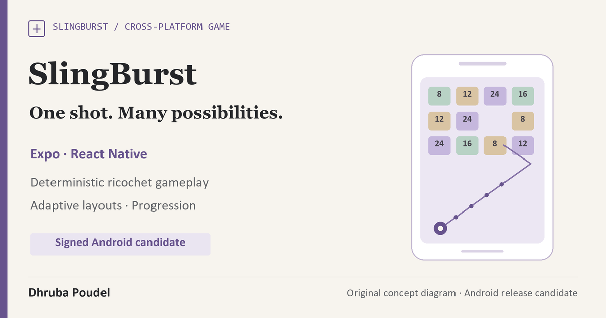

Own product · Cross-platform game development
SlingBurst
One gesture, repeatable physics and a native release path with visible acceptance gates.
- Gameplay
- Ricochets, board resolution, progression and tactile input.
- Product systems
- Adaptive layouts, sound, local progress and optional cloud-save foundations.
- Evidence
- 188 tests and signed cloud build recorded on 23 September 2026.

Build around the feel of one shot.
SlingBurst is my cross-platform ricochet game. A player pulls, aims and releases a stream of balls into a board of numbered blocks. The interaction is easy to recognise; the engineering challenge is keeping the simulation, progression and small-screen layout understandable as the board becomes more demanding.
I developed the gameplay systems and supporting product experience, including a browser preview and studio website. The active native release path is Android.
Connect deterministic gameplay with an adaptive shell.
The application uses Expo and React Native with a shared web/mobile codebase. The simulation handles projectile motion, ricochets, block interactions and the transitions between a shot, board resolution and the next turn. The surrounding interface supplies progression, loadouts, sound and input feedback.
Adapt the interface, not just the canvas size
The later Android work removes a restrictive orientation lock and adds a layout for landscape and larger windows. Available width is passed into the native banner component, and generated-manifest checks inspect orientation and resizing declarations.
Treat progress, identity and rewards as separate responsibilities.
The game includes local progress and optional account/cloud-save foundations. Saved-state ownership needs to follow the signed-in account, while a guest should still have a coherent local playing experience.
Advertising and reward configuration have their own consent, age-gating, placement and device checks. A completed build does not demonstrate accepted ad delivery, live purchases or a released store product.
The public illustration above is conceptual artwork for the engineering case. The browser preview lets a visitor explore the product separately from the native release candidate.
A signed candidate with a dated check record.
- Release record
- The retained 23 September 2026 handoff records a signed Android cloud-build candidate for version 26.9.23.
- Automated tests
- 188 tests were recorded as passing for that candidate. This is dated release evidence, not a fresh rerun or a player/adoption metric.
- Build checks
- The same record reports type checking, web export, Android generation and adaptive-manifest checks passed, followed by a signed cloud build.
- Package inspection
- A separate local inspection of the final bundle certificate, embedded manifest and embedded ad bytecode was not completed in that record.
Current delivery stage
Signed Android release candidate and public browser preview. Physical-device acceptance, a fresh Play Console scan and Google Play publication remain separate release gates.
Prove the native experience on the delivered package.
The next native acceptance run should install the Play-delivered test build on representative phones and larger or resizable devices. Portrait, landscape, safe areas, gameplay, consent and reward behaviour need to be observed on that package.
I do not claim an iOS release, Google Play approval, completed native-device QA or a measured retention result. The application source and private release artifacts remain private.